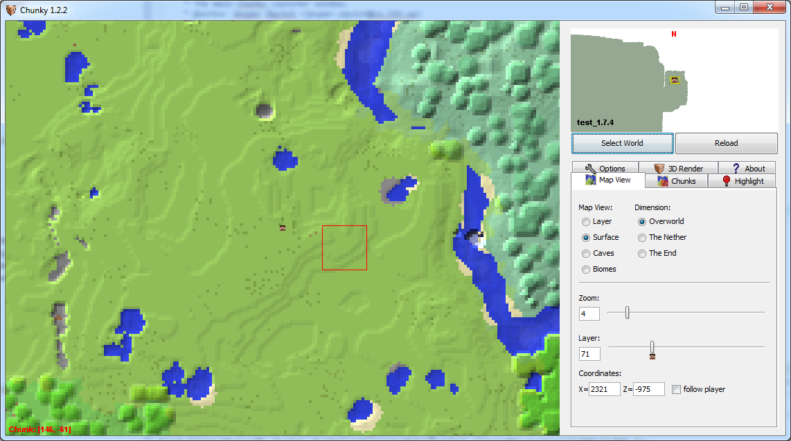

Search Documentation
Search Documentation
- About
 Gallery
Gallery- Getting Started
- User Interface
- Documentation
- Community
- Resources
Getting Started With Chunky
This guide will guide you through setting up your first render. If you have not yet installed Chunky, please check out the Installation Instructions.
Loading a World
When you have started Chunky you should see something like this:
The dialog in the middle asks you to select a world. If you don't see any worlds listed in the list this is either because your Minecraft installation is in a non-standard location, or you have no Minecraft saves yet.
You can specify a Minecraft installation directory in the launcher, or navigate to one of your world directories by clicking the "Browse for Specific World" button in the "Select World" window.
Selecting Chunks
When you have loaded a world in Chunky it should look something like this:

You can select some chunks by clicking the left mouse button, or by holsing Shift and pressing the left mouse button and dragging to create a rectangle. Holding Ctrl+Shift while dragging whil deselect all chunks inside the rectangle.
Creating a 3D Scene
Once you have selected some Chunks, go to the "3D Render" tab in the right hand pane of the main window and click the "New Scene" button. Alternatively, you can right-click in the 2D map then select "New 3D scene" option in the context menu.